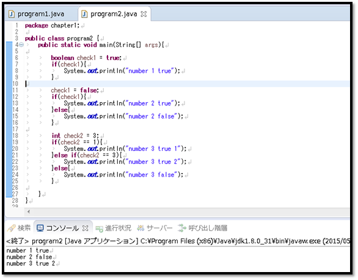

[Java スタディ - 5] 制御文 - 分岐 (if, switch〜case)
こんにちは。明月です。
制御文とはプログラムの処理順番を制御するか繰り返して処理する文法と言います。単純に制御文はこれだって言うのは難しいですね。
基本的にプログラムは人間と同じく上から下向き、左から右向きに読み込んで処理します。
それなら単純に演算子だけ使って「int」型のデータを１から１００まで加算すると思えば、１から１００まで「+」記号で加算して解決します。(アルゴリズム的には考えなく、単純に考えて)
これをプログラム的に表現すると下記通りになりますね。
int temp = 1;
temp += 1;
temp += 1;
．．．
単純な数計算がこの頃ならもっと複雑な計算がどんなふうになるか恐ろしいですね。その時に使う文法が制御です。
制御文法はJavaだけではなく、C言語、C++、C#などもすべて同じ文法で動きます。
リンク - [C# スタディ - 9] 制御文 - 分岐 (if, switch〜case, goto)
リンク - [C# スタディ - 10] 制御文 - ループ(for, while, do〜while, foreach)
リンク - [C# スタディ - 11] 制御文 - ループ分岐(break, continue)
ここでは制御文の中で分岐文に関して説明します。
if ~ else if ~ else 文
- if ~ else if ~ else文は条件の値によって(「true」、「false」)処理する制御文です。
① if(条件)
文章 ; => 条件が「true」なら文章を実行する。
② if(条件)
文章1; => 条件が「true」なら文章1を実行するｓ，「faｌse」なら文章2(else)を実行する。
else
文章2;
③ if(条件1)
文章1; => 条件1が「true」なら文章1を実行するし、「false」なら次の条件を検査する。
else if(条件2)
文章2; =>条件2が「true」なら文章2を実行するし、「false」なら文章3を実行する。
else
文章3;


初めの例はif条件で「check」の値が「true」なので、「number 1 true」がコンソールに出力しました。
２つ目の例はif条件で「check」の値が「false」なので、else式に入って「number 2 false」をコンソールに出力しました。
３つ目の例はif条件でcheck2の値は「3」ですが「check2 == 1」を計算すれば「false」の結果がでます。
なので、次の条件に行きます。次の条件は「check2 == 3」は「true」ですから、コンソールに「number3 true 2」がコンソールに出力します。
switch ~ case 文
- switch ~ case文は数式によってデータが一致するとこを処理する多重選択文です。
switch(数式) {
case 値1:
文章1;
break;
case 値2:
文章2;
break;
case 値3:
文章3;
break;
...
default:
文章;
break;
}

上の条件式を見ると「switch」の条件は「4」のデータが設定されています。そして条件の値と「case」の値が一致する条件の文章式を実行されます。
もし、一致するデータがなければ、「default」のデータが実行されます。
例では、「check」のデータが「4」なので「case 4」の文章式が実行され、結果は「number 4」に出力します。
ここまで、Javaの分岐に関して説明しました。
- [Javaスタディ- 52] Java servletでインスタンスを初期する方法2019/10/17 07:15:48
- [Javaスタディ- 51] Spring web frameworkで発生する文字化けのEncoding設定2019/10/16 07:32:55
- [Javaスタディ- 50] Web Spring frameworkでfilter設定2019/10/15 20:12:35
- [Javaスタディ- 49] Web serviceのweb.xmlでエラーページ設定2019/10/14 20:13:44
- [Javaスタディ- 48] JPAのDAOをFactoryパターンで管理する方法2019/10/13 22:55:52
- [Java スタディ - 47] JPAのSpring frameworkで依存性注入する方法2019/10/13 00:40:08
- [Java スタディ - 46] JPAでDAOを生成する方法2019/10/11 07:30:14
- [Java スタディ - 45] JPAでトランザクションの使用方法とオブサーバーパターンで共通トランザクション関数を作り方2019/10/10 07:29:43
- [Java スタディ - 44] JPAのQuery を作り方2019/10/09 07:34:08
- [Java スタディ - 43] JPAのEntityクラス設定(Cascade, fetch)2019/10/08 07:43:33
- [Java スタディ - 42] JPAでpersistance.xml設定とentityクラス設定(@GeneratedValue設定)2019/10/07 07:38:13
- [Java スタディ - 41] EclipseでJPAフレームワーク設定する方法2019/10/04 19:24:43
- [Java スタディ - 40] Web spring frameworkのJSPで使う言語 JSTL - XML2019/10/03 20:02:06
- [Java スタディ - 39] Web spring frameworkのJSPで使う言語 JSTL - 関数、データベース2019/10/02 21:00:22
- [Java スタディ - 38] Web spring frameworkのJSPで使う言語 JSTL - コアー、フォーマッティング2019/10/01 21:48:08
- [CentOS] FTPインストールする方法(vsftpd)2019/11/01 07:29:57
- [CentOS] SAMBAインストール方法2019/10/30 07:38:57
- [CentOS] PHPインストールする方法2019/10/29 20:09:03
- [CentOS] ApacheとTomcatの連携2019/10/29 07:28:33
- [CentOS] Tomcat インストール方法2019/10/28 22:38:56
- [CentOS] Java インストール2019/10/28 00:22:32
- [CentOS] apacheをインストールする方法2019/10/25 21:43:27
- [Linux] ディスク使用率チェック(df, du, lsof)とdfバグを解決方法2019/10/24 21:46:31
- [CentOS] Wheel設定2019/10/23 23:53:40
- [CentOS] システムの文字セット変更2019/10/21 16:58:39
- [CentOS] Vim編集ツールをインストールする方法2019/10/21 00:24:44
- [Linux] Putty使用方法2019/10/20 00:42:54
- [Window] Apacheをインストール方法、サービスに登録する方法。2019/10/18 07:36:51
- [Javaスタディ- 52] Java servletでインスタンスを初期する方法2019/10/17 07:15:48
- [Javaスタディ- 51] Spring web frameworkで発生する文字化けのEncoding設定2019/10/16 07:32:55